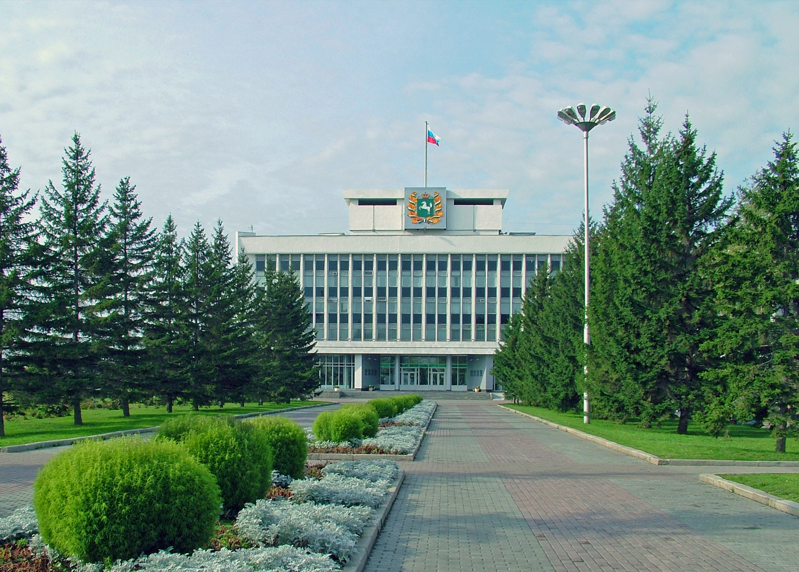

Администрация Томской области
В июле 2013 года по итогам открытого конкурса компания «Интант» стала победителем и заключила
Государственный контракт на оказание услуг по предоставлению
неисключительных прав на использование системы электронного документооборота в
исполнительных органах государственной власти Томской области (СЭД ИОГВ ТО) и ее установке,
настройке, вводу в эксплуатацию и сопровождению. Объем проекта был масштабным: в рабочую
группу входили представители Администрации и ИОГВ Томской области, было автоматизировано
более 70 точек делопроизводства, выполнено проектирование СПДн для подсистемы личных
обращений граждан, выполнена интеграция с официальным порталом Администрации Томской области
и с подсистемами РСМЭВ/МЭДО/VipNet.

Газпром трансгаз Томск
На текущий момент система DIRECTUM является для ООО «Газпром трансгаз Томск» востребованным
современным инструментом оптимизации бизнес-процессов при работе с документами, а компания
«Интант» – надежным партнером.
Проект внедрения стартовал в конце 2011 года, и уже в марте 2012, компания «Газпром трансгаз
Томск» начала эксплуатацию системы электронного документооборота DIRECTUM. При внедрении
были спроектированы процессы по регистрации и контролю исполнения приказов и распоряжений,
по контролю исполнения резолюций по входящим письмам, по согласованию и рассылке исходящей
корреспонденции, подготовке, рассмотрению и исполнению докладных и служебных записок, а
также автоматизирован процесс управления совещаниями под председательством генерального
директора.

Арбитражный суд Томской области
Арбитражный суд Томской области активно использует в своей работе современные технологии.
Сотрудниками группы компаний «Интант» в рамках внедрения системы DIRECTUM были проведены
обучение и аттестация пользователей и администраторов системы, предпроектное исследование
организации, согласованы и подписаны проектные решения, реализована разработка и настройка
системы под специфику деятельности организации. В настоящее время в суде систему DIRECTUM
активно используют работники канцелярии и секретариата суда, что позволило усовершенствовать
работу по регистрации входящих документов и вынесение по ним резолюций, а также регистрацию
исходящих документов, приказов и распоряжений.

Сибметахим
Внедрение системы DIRECTUM повысило качество и оперативность работы с документами во всех
подразделениях предприятия.
ООО «Сибирская метанольная химическая компания» входит в число лидеров по производству
метанола в России. Реализация проекта
осуществлена в соответствии с технологий внедрения за 16 недель. За это время сотрудники
компании «Интант» провели исследование предприятия, подготовили проектные решения, обучили
персонал, установили и настроили систему на рабочих местах. В ходе проекта в электронный вид
переведены ключевые процессы делопроизводства: регистрация входящей корреспонденции и
вынесение резолюций.
Объединенная компания "Сибшахтострой"
Объединённая компания «Сибшахтострой» – генподрядная строительная организация, выполняющая все виды проектных, строительно-монтажных и пусконаладочных работ со сдачей
объектов «под ключ». Основной профиль компании - строительство промышленных зданий.
Для объединенной компании «Сибшахтострой» были спроектированы и автоматизированы процессы
ранжирования субподрядчиков и согласования оценок подрядчиков по объектам. Процесс
ранжирования исполнителей актуален в областях со значительным объемом привлечения
субподрядчиков.
ТомскНИПИнефть
Основной вид деятельности ОАО «Томский научно-исследовательский и проектный институт нефти и
газа» – комплексное проектирование производств и объектов нефтяной и газовой промышленности.
В результате совместных работ с рабочей группой ОАО «ТомскНИПИнефть» специалистами группы
компаний «Интант» был подготовлен план автоматизации бизнес-процессов заказчика и
разработаны проектные решения.
Клиентские части были установлены на 600 рабочих местах; автоматизированные процессы
охватили работу сектора документационного обеспечения управления, отдела управления
персоналом, службы по метрологии, стандартизации и менеджменту качества, отдела
информационных технологий, юристов, руководителей подразделений и всех сотрудников,
ответственных за документооборот.

Томский электротехнический завод
Руководство завода приняло решение о внедрении электронного документооборота, поскольку
объем бумажных документов начал превышать допустимые пределы.
Работы по внедрению были начаты в июле 2010 года. В поставку системы вошли Базовые модули
DIRECTUM, модули "Канцелярия", "Управление договорами" и "Управление показателями
эффективности". За время проекта сотрудники компании "Интант" провели исследование
предприятия, подготовили проектные решения, обучили персонал завода, установили и настроили
систему на рабочих местах, провели тестовую и опытную эксплуатацию. С начала 2011 года в
системе одновременно работают более 50 сотрудников из 35 подразделений ТЭТЗ.
ЭлеСи
При внедрении были использованы лицензии DIRECTUM Enterprise - наиболее мощного варианта
системы DIRECTUM, предназначенного для крупных организаций.
Компания "ЭлеСи" – ведущий разработчик интеллектуальных высокотехнологических систем
контроля и управления для предприятий нефтегазовой отрасли. В мае 2007 года специалисты
компаний «Интант» приступили к выполнению работ по внедрению DIRECTUM.
По завершению проекта автоматизированы процессы работы с входящей и исходящей
корреспонденцией, внутренними документами компании.
Клиентские части установлены на более чем 300 рабочих местах сотрудников предприятия.
Сибирский институт управления РАНХиГС
В вузе было проведено обследование с участием специалистов группы компаний «Интант» и
определены основные цели автоматизации электронного документооборота.
Внедрение DIRECTUM в академии началось в декабре 2009 года.
На текущий момент в академии полностью в электронный вид переведена работа с входящей и
исходящей корреспонденцией, спроектирована работа с распорядительной документацией вуза:
приказы по основной деятельности, распоряжения, приказы по административно-хозяйственным
вопросам, кадровые приказы.
Торговый дом «Мясной ряд»
В системе DIRECTUM имеется набор средств для интеграции с 1С.
Основными бизнес-заказчиками от Торгового дома «Мясной ряд» выступили работники бухгалтерии,
которые ежедневно работают с большими объемами первичной документации и используют учетную систему 1С.
Бизнес-решение "DIRECTUM: Финансовый архив" позволяет контролировать все этапы работы с
финансовыми документами: от формирования исходящих первичных документов из системы 1С со
штрих-кодом DIRECTUM, сканирования и занесения в систему DIRECTUM входящих первичных
документов до хранения документов в едином хранилище и возможности готовить пакеты
документов для налоговых проверок.
Свидетельство об официальной регистрации программы DIRECTUM для ЭВМ
Сертификат сертифицированного партнера-разработчика DIRECTUM
Сертификат авторизированного партнера DIRECTUM
Сертификат центра сертифицированного обучения DIRECTUM

Сертификат ИСО 9001-2011
Сертификат технического решения Intant: Recognition Helper Service
Сертификат технического решения Массовая обработка документов по штрихкодам
Сертификат Юнак Ксении Владимировны за активное участие и представление проекта "Газпром
Трансгаз Томск: масштабное внедрение DIRECTUM от Омска до Камчатки"
Сертификат Юнак Ксении Владимировны – сертификат об обучении по технологии внедрения DIRECTUM

Сертификат Юнак Ксении Владимировны – сертификат по курсу "Управление IT-проектами"

Сертификат Юнак Ксении Владимировны – сертифицированного руководителя проектов внедрения DIRECTUM
Сертификат Юнак Ксении Владимировны – сертифицированного пользователя модуля "Канцелярия"
DIRECTUM

Сертификат Юнак Ксении Владимировны - сертифицированного администратора DIRECTUM
Сертификат Юнак Ксении Владимировны – сертифицированного преподавателя DIRECTUM
Сертификат Юнак Ксении Владимировны – сертифицированного консультанта по внедрению DIRECTUM

Сертификат Юнак Ксении Владимировны – сертифицированного менеджера по продажам DIRECTUM

Сертификат Фёдорова Яна Владиславовича – сертифицированного пользователя модуля "Канцелярия"
DIRECTUM
Сертификат Фёдорова Яна Владиславовича – сертифицированного администратора DIRECTUM
Сертификат Фёдорова Яна Владиславовича – сертифицированного менеджера по продажам DIRECTUM
Сертификат Крутых Оксаны Викторовны – сертифицированного администратора DIRECTUM
Сертификат Крутых Оксаны Викторовны – сертифицированного консультанта по внедрению DIRECTUM
Сертификат Крутых Оксаны Викторовны – сертифицированного преподавателя DIRECTUM
Сертификат Крутых Оксаны Викторовны – сертифицированного разработчика DIRECTUM
Сертификат Крутых Оксаны Викторовны – сертифицированного администратора DIRECTUMRX
Сертификат Косихиной Ирины Игоревны – сертифицированного пользователя модуля "Канцелярия" DIRECTUM
Сертификат Косихиной Ирины Игоревны – сертифицированного администратора DIRECTUM
Сертификат Косихиной Ирины Игоревны - сертифицированного консультанта по внедрению DIRECTUM
Сертификат Косихиной Ирины Игоревны – сертифицированного преподавателя DIRECTUM
Сертификат Азизовой Гузяль Тахировны – сертифицированного пользователя модуля "Канцелярия"
DIRECTUM
Сертификат Азизовой Гузяль Тахировны – сертифицированного администратора DIRECTUM
Сертификат Скулкина Максима Вячеславовича – сертифицированного пользователя модуля "Канцелярия"
DIRECTUM

Сертификат Скулкина Максима Вячеславовича – сертифицированного администратора DIRECTUM
Сертификат Скулкина Максима Вячеславовича – сертифицированного разработчика DIRECTUM